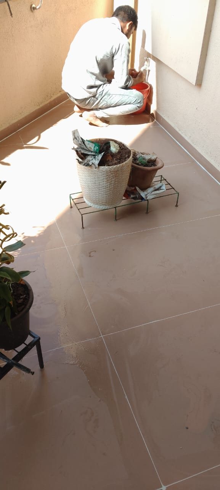
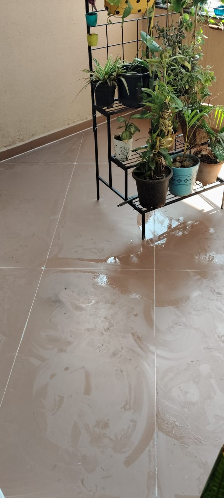
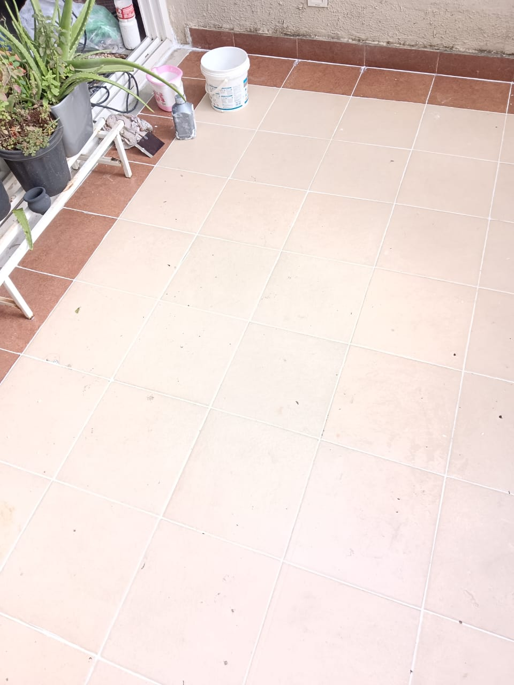
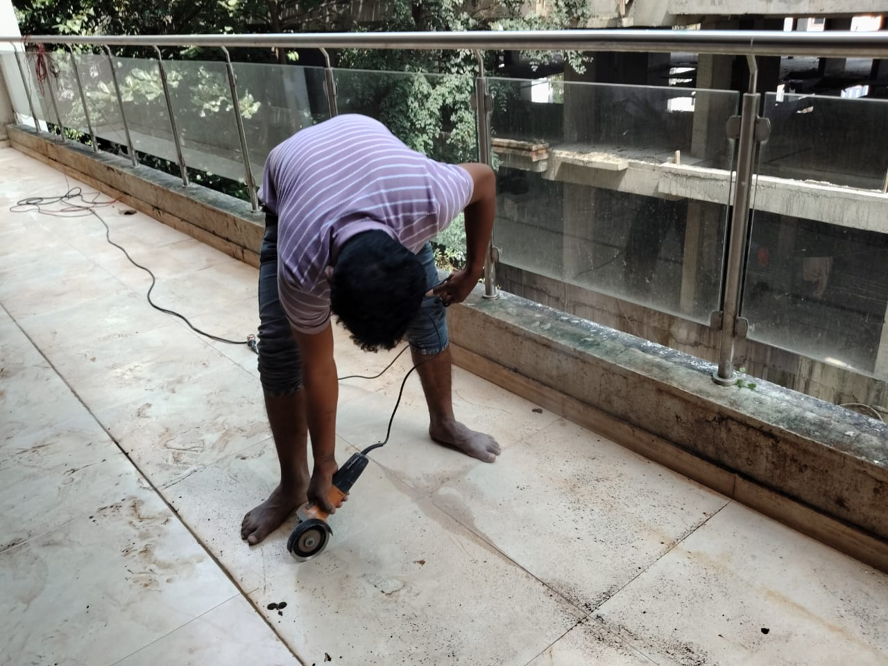
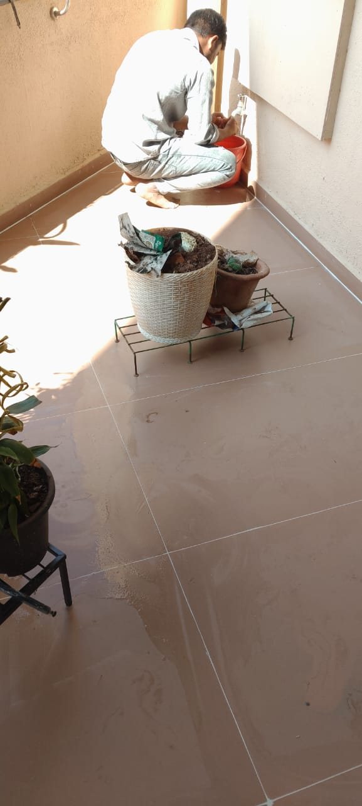
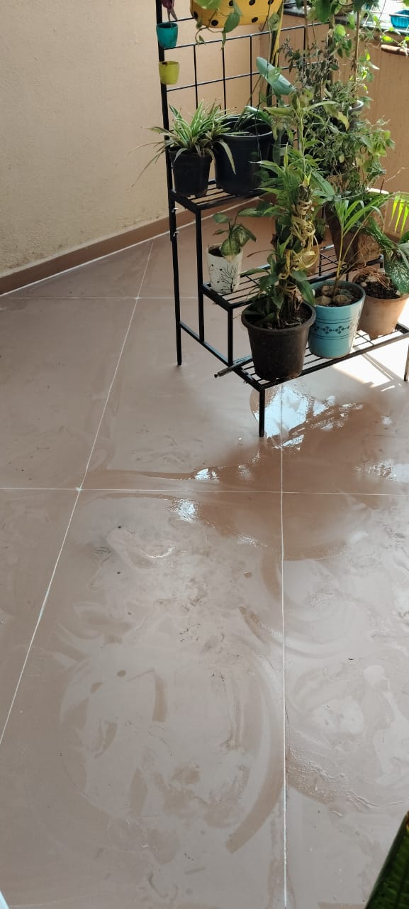
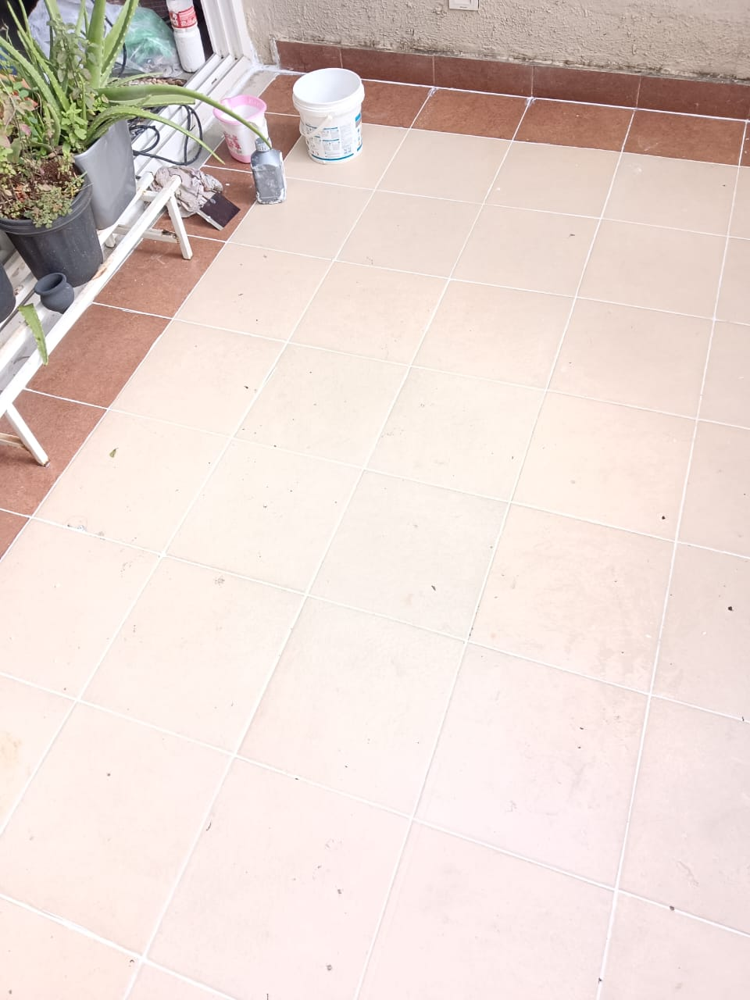
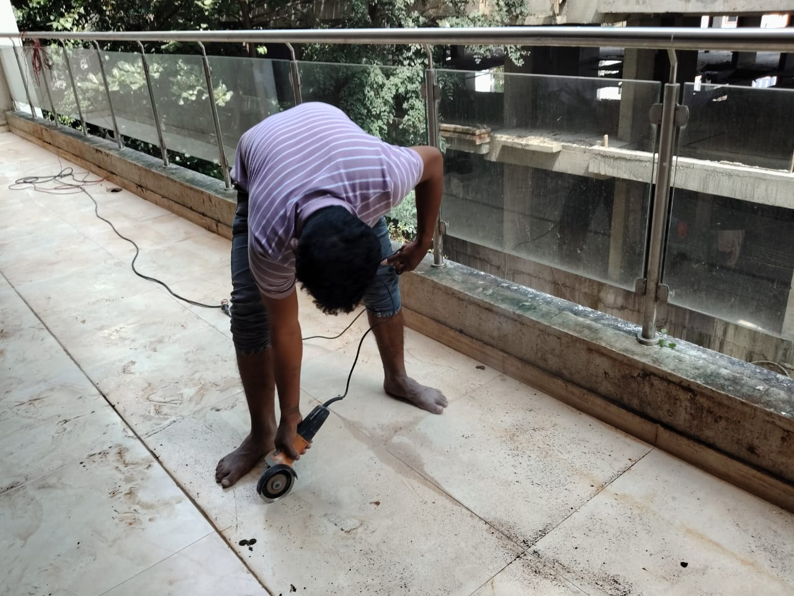

Balcony & Sit-Out Waterproofing
Reliable leakage protection for balconies exposed to rain and weather.
Why Balcony Waterproofing Is Important
Balconies are directly exposed to rainwater and improper slope or cracks often cause seepage into living areas below. Waterproofing prevents structural damage and interior dampness.
Materials Used
• Flexible cementitious coating
• Acrylic waterproof membrane
• PU sealants for joints
• Reinforcement mesh
• UV resistant top coat
Our 5-Step Balcony Waterproofing Process
Step 1: Balcony inspection and slope checking.
Step 2: Surface cleaning and loose material removal.
Step 3: Crack and joint sealing.
Step 4: Waterproof coating application with mesh.
Step 5: Curing and water testing.
Project Image Gallery
 







Frequently Asked Questions
1. Why balcony leakage happens?
Due to cracks and poor slope.
Due to cracks and poor slope.
2. Tile removal required?
Not always.
Not always.
3. Life of waterproofing?
5–10 years.
5–10 years.
4. Work duration?
2–4 days.
2–4 days.
5. Weather resistant?
Yes.
Yes.